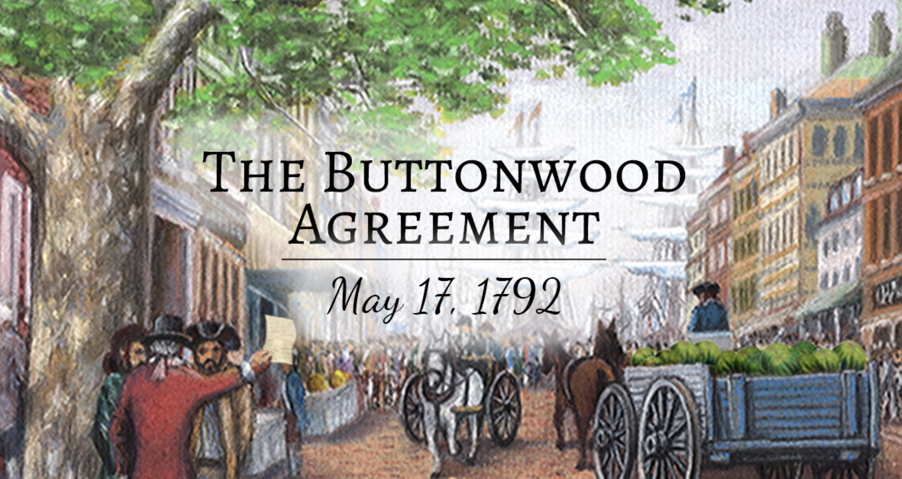

人性堕落的大阴沟
现代资本主义制度
荷兰人将银行、证券交易所、信用、保险和有限责任公司有机地统一成一个相互贯通的金融和商业体系。最早的操纵股市的技术:
- 卖空 - short-selling
- 空头袭击 - bear raid
- 对敲 - syndicate
- 操纵市场 - corner
郁金香泡沫:
贝壳串珠囤积事件:
政府价格控制的失灵，佛雷德里克.菲利普斯囤积贝壳串珠，以减少贝壳串珠的流通量，从而抬高了串珠的价格。汉密尔顿主义者和杰佛逊主义者
- 汉密尔顿推崇市场的作用，扶持和鼓励商业活动，主张政府要在建立金融体系和维护经济秩序中发挥积极作用
- 杰佛逊则憎恶任何投机活动，并且把充斥着各种投机行为的纽约称为“一条人性堕落的大阴沟”
1653 - 1789
区分好人与恶棍的界线
国债发行和合从国银行的上市
汉密尔顿大规模发行国债，直接导致了纽约资本市场的活跃，而合从国银行的上市，则启动了这个国家第一轮股市投机狂潮梧桐树协议
卡特尔--价格同盟，被认为是纽约交易所的源头
资本市场阴暗面的代表之一：内幕交易者
威廉.杜尔作为财政部长助理，利用公权力获取内幕信息进行疯狂投机；杜尔的迅速溃败，引发了美国历史上第一次金融恐慌，汉密尔顿购进大量联邦证券对市场进行流动性支持，从而成功地阻止了金融恐慌的蔓延。
1789 - 1807
舔食全美金融蛋糕上奶油的舌头
要致富先发展交通：伊利运河修建成功
伊利运河连接美国东西部的物运和交通枢纽使得纽约一举成为美国的经济中心，吸纳和汇聚越来越多的全美乃至全球的经济金融资源。现在华尔街投机者的原型
利特尔，作为独立的经纪人，没有任何政府关系，无从获取内幕消息。他主要借助市场的短期波动来投机获利，并靠成功囤积莫里斯运河的股票而一举扬名华尔街。
1808 - 1836
在繁荣与崩溃之间
要致富先发展交通：铁路的发展及优势
- 比运河效率更高，所受地理限制更少
- 推动重工业的发展
- 促进了融资需求
电报的发明
纽约股市的开盘价格能够迅速传递到美国其他地方，从而大大提高了纽约作为金融中心的影响力，美国其他地方性的资本市场迅速被边缘化加利福尼亚淘金热
大量的黄金支撑着美国经济的迅速发展，华尔街因此更加繁荣华尔街的弄潮儿 - 德鲁大叔
- 掺水股的由来：德鲁以贩卖牲畜起家，在赶往市场之前，让牲畜喝大量的水
- 欺骗公众：故意留下“不论在什么价位，只要在面值以下，你能买到多少Oshkosh股票，就买多少”， 参考2017年，徐小平故意泄露微信公众号内容，“各位CEO， 区块链革命已经到来，blabla”
1837 - 1857
浮华世界不再是个梦想
美国南北战争
带来了对战争融资的巨大需求国债融资方式的转变
华尔街帮北方政府没有用传统的私下向银行和经纪商出售债券的方式，即私募发行，而是革命性地想公众发售战争国债，即公募发行。同时南方政府严重依赖印钞票支付战争费用，造成了严重的通货膨胀，击垮了南方的经济体系。自我奋斗式的英雄：范德比尔特
- 16岁购买第一艘船，在航运业获得巨大成功
- 70岁，看到铁路行业的前景，毅然进入铁路行业，范德比尔特是19世纪最伟大的铁路运营者，但从没修剪过一条铁路
- 纽约-哈莱姆铁路逼空战：
- 仔细考察，确认哈莱姆管理上的不足，自信自己可以更高的效率来运营这条铁路并使之盈利
- 持续不断地买入股票，逼空卖空者和卖空袭击者
- 目标长远，立足于建立铁路帝国，而不是买卖铁路股票
1857 - 1867
谁能责备他们 - 伊利铁路股权争夺战
事件背景
- 19世纪中期美国政府的腐败非常触目惊心，纽约更是如此。由于证券法律法规严重缺水，投机商都豢养和控制着忠实于自己的法官。
- 当时的纽约中央铁路、宾夕法尼亚和伊利铁路共同支撑着美国中西部到纽约市的陆路运输，范德比尔特希望寻求妥协，维持价格同盟
事件过程
- 范德比尔特购入大量伊利股票，同时控制自己的法官颁布法令不得增加伊利股票的总量
- 德鲁集团让自己的法官下达了完全相反的法令
- 德鲁集团把可转换债券换成了股票
- 同时凭空印刷了数万张崭新的伊利股票，然后抛售大量“掺水股”，成功席卷了700万美元
1867 - 1869
黄金操纵案
事件背景
- 南北战争结束，金币和绿钞可以同时流通，但实际效果是黄金会在流通领域彻底消失
- 杠杆率高：在纽约的黄金市场，只需缴纳少量保证金就可以购买数额很大的黄金合约
- 德鲁集团的古尔德和菲斯科刚白赚了700万美金
事件过程
- 古尔德和菲斯科游说格兰特总统：政府应该让黄金市场自由运行而不得进行任何干预
- 古尔德和菲斯科成功控制了数倍于纽约黄金供应量的黄金合约，导致黄金价格扶摇直上
- 格兰特意识到被骗，下令干涉黄金市场，但已经太晚了，这场投机已经给美国经济和华尔街带了巨大的混乱
1867 - 1869
你需要做的就是低买高卖
美国收割欧洲的新方式
黄金投机案导致了美国股市的萧条。但是对美国也有有利的一面。当时欧洲投资者一直是美国主要的国际资本来源，股价的低迷，能够让美国人能够以低价购回此前向欧洲人出售的美国证券，事实上变相洗劫了此时还远比美国富足和强大的欧洲老牌资本主义国家。 股市的周期性崩溃迫使经济繁荣时期积累下来的泡沫被挤出经济循环之外，也使得经受了考验的实体经济变得更加稳健华尔街历史上的守财奴
海蒂.格林：“低买高卖”的践行者，核心是对上市公司进行全方位的研究、筛选、赠别代表人物J.P.摩根
- 信奉诚信为本
- 为美国的工业化进程，筹集了大量巨额资金
- 重塑了华尔街在美国公众中的形象
最重要的文学作品
格兰特总统破产，靠写回忆录挣钱，无意中成就了《格兰特将军回忆录》
1873 - 1884
黄金和白银之争
事件经过
- 1873年美国停止铸造银币
- 迫于银矿工人罢工，1887年通过可以自由地使用白银铸币，并规定了银币和金币的价格比
- 美国西部以空前的速度开采白银而使供应量激增
- 人民选择使用银币作为流通工具，而使黄金大量流出国库
- J.P.摩根成功了再欧洲筹集了1亿美元的黄金储备，帮克利夫兰总统度过了危机
道琼斯指数的诞生
《华尔街日报》的创始人道和琼斯将股市中主要股票的价格加权计算，得到了能够反映股市整体情况的一个绝妙而简单的方法
1884 - 1901
美联储的诞生
重要事件
- 大西洋海底光缆联系了纽约和伦敦量大金融市场
- 美国取代英国成为世界第一经济强国
- J.P.摩根出面组建美国钢铁公司
- 1913年美联储的成立
- 1914年，欧洲爆发第一次世界大战
美联储
1901 - 1914
美国世纪的开始
重要事件
- 1914年7月底，股市全线下跌。伦敦交易所宣布暂停交易，全球所有的卖单都集中到了纽约
- 战争对军需品和农产品的巨大需求，给美国带来了自南北战争以来最大的经济繁荣
- 美国向轴心国宣战
1914 - 1920
汽车时代的来临
斯图兹汽车股票囤积案
- 20年代，汽车行业股票成为龙头股
- 赖恩囤积斯图兹股票，但触犯了交易所成员的空头，打算修改交易规则来击败赖恩
- 赖恩利用公众对弱者的同情，在舆论压力下，击败了交易所成员的空头代表
- 但赖恩最终被交易所成员逐出交易所，随后赖恩的个人财产被洗劫一空
福特汽车时代和信用支付的出现
信用支付的出现，大大增加了中产阶级的购买力，从而亨利.福特开创了汽车时代贴现利率
以5% ---》 12% ---》 20%，在联邦储备银行、经纪人、投资者直接流转，孕育着巨大的金融风险
1920 - 1929
大萧条
大萧条
- 1929年9月5日，市场开始下挫
- 1929年10月29日，单日下跌22%
- 1932年，较1929年高点，下跌89%
- 股灾之后，美国经济陷入了长达4年的衰退
美国经济的重塑
- 1933年，取消金本位制
- 1933年，颁布《证券法》和《格拉斯 - 斯蒂格尔法》
- 1934年，颁布《证券交易法》
- 1934年，成立美国证监会SEC
- 1940年，颁布《投资公司法》和《投资顾问法》
- 股灾之后，美国经济陷入了长达4年的衰退
1929 - 1938
华尔街也是主街
第二次世界大战爆发
- 美国经济被第二次世界大战所挽救
- 战争早期，美国股市还略微上涨
- 由于战争的需求，美国公司的盈利从1939年的64亿美元激增到1942年的209亿美元
- 压抑的民用需求，即将催生战后美国经济的大繁荣
美林公司成立
革命性地将连锁店的运营模式引入经纪业务，扩大了投资者的参与人数本杰明.格兰厄姆
巴菲特的老师，价值投资者及公司基本面研究的倡导者大批养老基金、共同基金成为主导地位
1938 - 1968
大变革时代
重要的变革
- 机构投资者成为主流
- 计算机技术扩大的华尔街的交易效率
- 摩根士丹利、高盛纷纷IPO
- 美国经济进入滞涨阶段，加上越南战争，第一次石油危机，股市场持续低迷
- 固定佣金制度被取消
- 1971年，纳斯达克成立，步入新经济时代
1968 - 1987
互联网时代来临
1987年的股灾
- 1987年8月25日，股市大跌
- 美联储对市场进行了救助
- 格林斯潘当选主席：对付任何此类危机，你只需要开闸放水，让金钱充斥市场即可
互联网时代开启
雅虎、亚马逊、谷歌发展壮大
1987 - 1999
不平静的新世纪
互联网泡沫的破裂
1997年纳斯达克暴涨到2000年的最高点5132.52点，随后下跌，两年内跌去77%2001年，发生9.11事件
美国利用房地产来拉动经济
2008年，爆发全球性的信用危机，中国开启基建狂魔，进入4万亿时代
2009年1月3日，新生事物比特币诞生，何去何从，留待时间来验证
2018年，中美发生贸易战，围绕科技封锁和争夺全球市场而展开
2000 - 2019
减速时代的投资思路
去杠杆时代
操作思路
- 普通人暴富逆袭的机会会变少，不必像以前那么焦虑也不必给自己太大压力，学会享受生活
- 住房目前，不是一个好的投资渠道，当然中国政府有的是办法让你买房，比如户口制度，减少义务教育的分散度，集中办学，让农村人口，逐渐迁移到城市
- A股应该有机会成为未来的主要投资渠道，可以间接或者直接参与
- 寻找新兴市场的机会，比如越南
- 大的爆发机会在科技领域，但风险也大，可以少量参与
- 投资自己！！！
2019 -